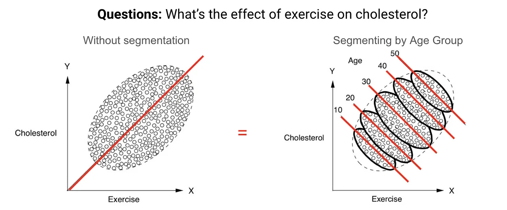
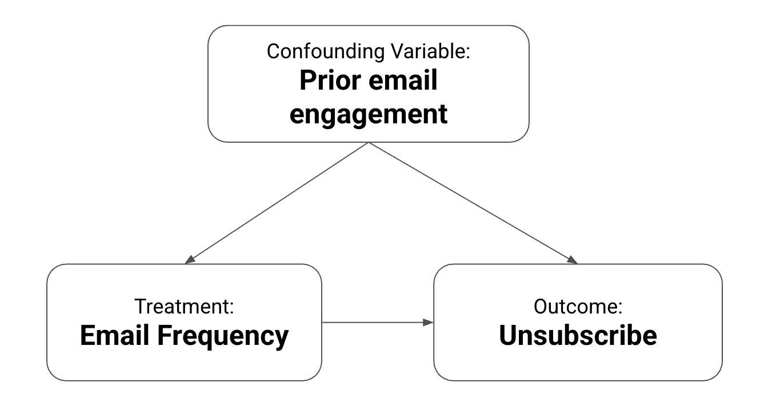

3.1 Causal Thinking
Let’s consider a typical situation that many data scientists face in business. Imagine you’re assisting a colleague from the marketing team, and they say:
“The marketing team sent coupons to some users, and their purchase rate was twice as high as those who didn’t receive them. So, the coupons must have doubled the purchase rate!”

Would you agree with this conclusion? At first glance, you might be inclined to agree. But wait, what if you knew this additional detail?
“We sent the coupons only to customers who had purchased within the last 12 months.”
Now this raises a red flag. So what’s the potential issue here?
Selection Bias
The key question is: what is the true impact of the coupons? If we distribute coupons based on intentional criteria, we can’t make a fair comparison between purchase rates. The customers who received the coupons might have made a purchase regardless. They were already more engaged, and may have been influenced by other factors like newsletters or social media. These factors introduce what’s known as selection bias: the distortion that arises when the treated and untreated groups aren’t comparable to begin with.

The 10-point gap between groups looks impressive, but most of it was already there before the coupons went out. The real lift from the coupon (the part that wouldn’t have happened otherwise) might be just a few points. The rest is selection bias: the coupon went to people who were likely to buy anyway.
You see this pattern all the time in marketing. Retargeting campaigns show high conversion rates, but that’s because they reach people who already visited your site. Email campaigns look great on revenue per recipient, but those emails go to your most engaged subscribers. In both cases, the treatment and the outcome are linked because of customer intent, not because the treatment caused the outcome.
What Is Causal Inference?
So how do we move past these traps? This is where causal inference comes in.
Causal inference is about figuring out whether there is a cause-and-effect relationship between a specific action (the “treatment”) and its result (the “outcome”). Traditionally, it has been a cornerstone in fields like healthcare. For example, one common use case is assessing whether a new medication effectively treats a disease. In that context, administering the medication is the “treatment,” and the patient’s recovery is the “outcome.”
But causal inference isn’t just for healthcare. In e-commerce and marketing, “treatments” include actions like sending coupons, running advertisements, or sending direct mail campaigns, and “outcomes” are things like purchases, sign-ups, or revenue.

The Counterfactual
The main challenge in causal inference is that we can only observe one outcome for each individual. If we had a time machine, we could give a customer a coupon, then rewind time and see what happens if we didn’t give them the coupon. In the real world we can’t: we only ever see one version of the story for each customer.
This is where causal inference steps in: it lets us estimate the outcome that didn’t happen, known as the counterfactual.

Formalizing this makes the problem precise. The treatment effect for a customer is:
\[\tau = Y(1) - Y(0)\]
Here, \(Y(1)\) is what happens if someone gets the treatment, and \(Y(0)\) is what happens if they don’t. The problem is, we only ever see one of these for each person. If we just compare treated and untreated groups without accounting for this, we mix up the true effect with differences that were already there. That’s selection bias.
Why Not Just Run an A/B Test?
You might wonder, “Why not just run an A/B test?”
In marketing, this approach is called A/B testing, and in the broader causal inference literature it’s also known as a Randomized Controlled Trial (RCT). It is often considered the “gold standard” for answering causal questions. Here’s how it works.
You randomly divide your customers into two groups: the “treatment group” and the “control group.” The treatment group receives the coupon; the control group does not. Say the treatment group’s purchase rate ends up at 40% and the control group’s at 20%. The difference, 20 percentage points, is the effect of the coupon.

The critical point is randomization. By randomly assigning customers, we ensure that other factors (customer preferences, past behavior, channel exposure) are balanced across both groups. That balance is what removes the selection bias that would otherwise distort the comparison.
Limitations of A/B Testing
So if we understand A/B testing, does that mean it’s always the perfect solution? Unfortunately, no. While A/B testing provides the strongest evidence available, there are many situations where it just isn’t feasible:
Opportunity loss. If you run an A/B test, half your customers won’t receive the new product or offer. That could mean missing out on sales and growth, an “opportunity loss” the business can’t always afford.
Time constraints. A/B tests can be time-consuming. They often require weeks or even months to gather enough data to draw reliable conclusions. That delay can mean missing a market window or losing a competitive edge.
Stakeholder complexity. A/B tests become harder when multiple stakeholders are involved. Not every client or partner has the resources or ability to execute one effectively.
When A/B testing isn’t an option, we have to fall back on observational data: data collected without any deliberate experiment.
Simpson’s Paradox: Challenges of Observed Data
Observational marketing data can be misleading even when the pattern looks obvious.
Suppose we want to understand the relationship between email frequency and unsubscribe risk. We plot each subscriber by how many marketing emails they receive and whether they are likely to unsubscribe. In the aggregate data, the pattern looks surprising: subscribers who receive more emails appear less likely to unsubscribe.
At first glance, this might suggest that sending more emails reduces unsubscribe risk. But that conclusion should make us uncomfortable. For the same type of subscriber, sending too many emails should usually increase the chance that they unsubscribe, not reduce it.
So what is missing? Prior email engagement.
Marketing teams rarely send emails at random. Subscribers who often open and click emails usually receive more campaigns, because they are active and responsive. Subscribers who rarely engage often receive fewer campaigns, or are suppressed from some sends. These groups have very different baseline unsubscribe risks.
Once we segment subscribers by prior email engagement, the pattern reverses: within every engagement group, higher email frequency is associated with higher unsubscribe risk. (Low-engagement subscribers are more likely to unsubscribe overall, but inside each group, sending more emails still raises that risk.)
This is Simpson’s Paradox: the aggregate trend says one thing, while the pattern within comparable groups says the opposite.

Confounding Variables
In the email example, prior engagement is a confounding variable: a variable that influences both the treatment (email frequency) and the outcome (unsubscribe risk). Failing to account for confounders can lead to misleading conclusions, including, as we just saw, a completely reversed effect. That’s why identifying and controlling for these variables is central to causal inference with observational data.

The lesson: with observational data, always ask whether there is a confounding variable hiding behind the numbers.
Road Map for Part 3
Here’s the plan. The first job is to get a comparison you can believe. If you can randomize, A/B testing gives the most reliable answer. When you cannot, quasi-experimental designs reconstruct the comparison from how the treatment was assigned, and that includes the action that reached everyone on a known date, where the missing no-treatment path is forecast from the series’ own history. The second job starts once you have an effect you trust, and asks how it varies from customer to customer, so you can stop spending on people who would have converted anyway. That is what meta-learners and uplift modeling do.